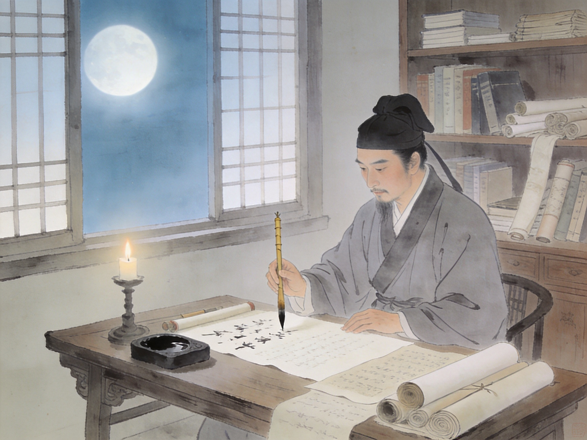
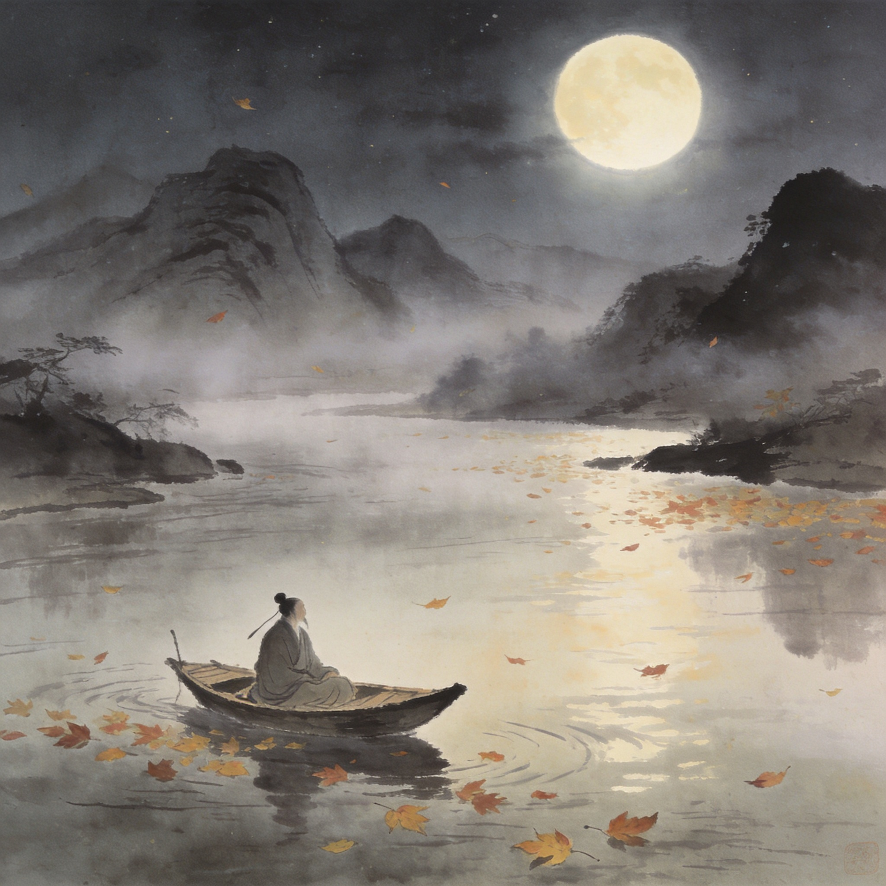
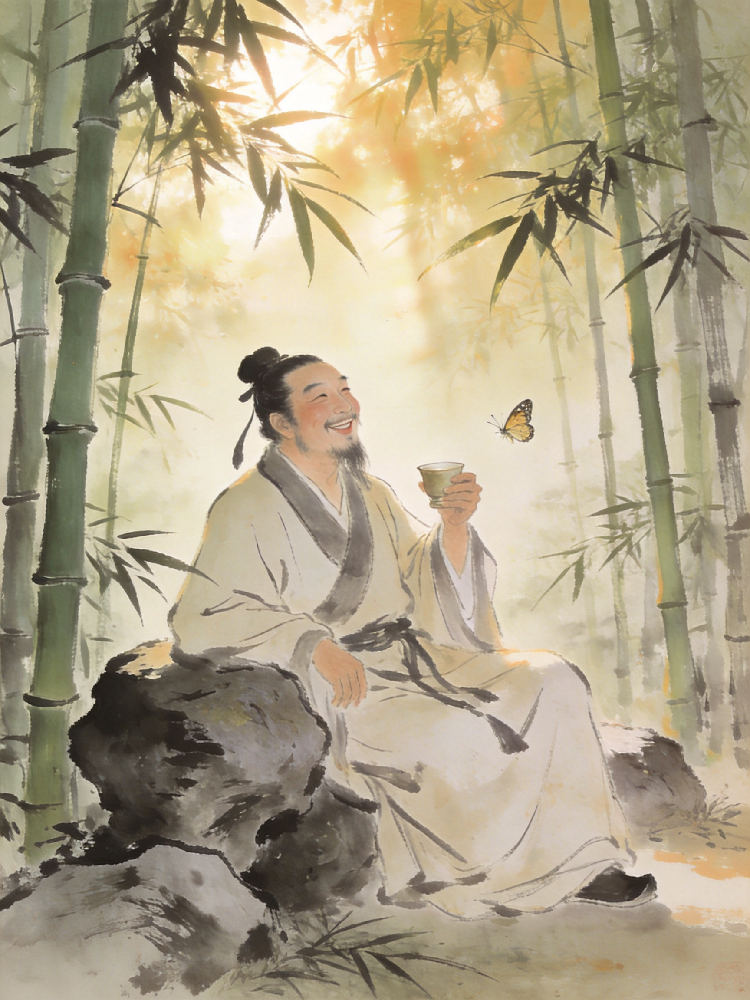

北宋 · 文豪 · 艺术家 · 生活家
苏东坡
人生如逆旅，我亦是行人
苏轼（1037—1101），字子瞻，号东坡居士。眉州眉山（今四川眉山）人。
中国历史上罕见的全才——诗词文赋无一不精，书法绘画自成一家，水利工程惠及民生，美食创造流传千年。三度被贬始终豁达——他留下的不只是文学遗产，更是一种面对逆境的生活态度。
林语堂说他是「无可救药的乐天派」。王国维说：「三代以下诗人，无过屈子、渊明、子美、子瞻者。」

苏轼生于仁宗景祐四年（1037年），恰逢北宋文化最灿烂的时期。政治上「重文轻武」，文人士大夫地位极高。经济上空前繁荣——汴京人口百万，活字印刷术让知识传播前所未有地便捷。但盛世之下，积弊已深：三冗（冗官、冗兵、冗费）严重，边疆辽夏环伺，改革与保守的党争愈演愈烈——这正是苏轼命运起伏的直接推手。
「三苏」——苏洵、苏轼、苏辙——是中国文学史上最著名的父子组合。苏辙在墓志铭中写道：「抚我则兄，诲我则师。」
号老泉，二十七岁始发愤读书。文笔老辣雄健，《六国论》传世。对两个儿子的教育不只是教文章，更教独立思考。
字子瞻，号东坡居士。诗词文赋书画美食，无所不精。才华横溢而从不恃才傲物——中国文人理想人格的化身。
字子由，性沉静内敛，文章汪洋澹泊。多次为兄求情、代兄受过。兄弟一生通信不绝，传世之作中有大量唱和诗。
四川眉山书香门第。母亲程氏亲授《后汉书》，少年苏轼即「奋厉有当世志」。
21岁与弟同榜中进士。欧阳修读其文惊叹「此人可谓善读书，善用书，他日文章必独步天下」，因疑是弟子曾巩所作，只给了第二名。
获制科「第三等」——北宋最高记录。赴凤翔任签书判官，目睹民间疾苦，萌生经世济民之志。
与王安石变法理念不合，自请外放。游西湖、访寺院、作诗词——「欲把西湖比西子，淡妆浓抹总相宜。」
诗文被弹劾讥讽朝政，被捕入御史台狱，关押103天，几近处死。王安石上书「安有盛世而杀才士者」，终被贬黄州。
在黄州东坡开荒耕种，自号「东坡居士」。写下《念奴娇》《前后赤壁赋》《记承天寺夜游》——将中国文学巅峰又抬高一层。
疏浚西湖，淤泥筑堤——「苏堤春晓」至今位列西湖十景之首。开中国最早公立医院之一「安乐坊」。
新党上台，贬惠州——「日啖荔枝三百颗，不辞长作岭南人」。62岁再贬儋州（海南），在蛮荒之地教书育人，开化一方。
徽宗大赦，北归途中病逝于常州，享年64。临终：「吾生无恶，死必不坠。」百姓罢市悼念。

苏轼现存诗约2700首、词约300首，各体文章数千篇。他是宋词豪放派的奠基人——「诗至杜子美，文至韩退之，书至颜鲁公，画至吴道子，天下之能事毕矣。能事毕而苏子出焉」。

以主客问答论宇宙人生，将庄子哲学化入文学。文末「逝者如斯，而未尝往也；盈虚者如彼，而卒莫消长也」——变与不变的辩证，是中国散文的最高成就之一。
月光的空灵、人生的闲适，透过三个比喻写尽。北宋小品文巅峰。
苏轼是北宋「尚意」书风的代表人物，与黄庭坚、米芾、蔡襄并称「宋四家」。《寒食帖》被誉为「天下第三行书」——笔势跌宕，字形忽大忽小，浓墨如泣血，飞白如叹息。
画论方面，提出「论画以形似，见与儿童邻」，强调神似重于形似。主张「胸有成竹」——「画竹必先得成竹于胸中」。

「雪沫乳花浮午盏，蓼茸蒿笋试春盘。人间有味是清欢。」
苏轼一生三度被贬，越贬越远。但他的伟大之处不在逆境中坚持，而在于他把最坏的命运活成了最好的诗——在黄州种地酿酒，在惠州日啖荔枝，在儋州教书育人。
「人间有味是清欢」——他不需要轰轰烈烈，只需要一碗茶、一盘笋、一个朋友，就活得津津有味。
中国文化史上最著名的美食家。被贬黄州时，发现当地猪肉便宜却没人会做——《猪肉颂》：「净洗铛，少著水，柴头罨烟焰不起。待他自熟莫催他，火候足时他自美。」
慢火红烧肉，肥而不腻。至今是杭州名菜。
鲜鲤鱼清炖，加盐酱姜葱。
「日啖荔枝三百颗，不辞长作岭南人。」
写信提醒儿子：「无令中朝士大夫知，恐争谋南徙。」
面粉芝麻香油酥饼。
以黄州豆腐为主料的蒸菜。
「吾上可陪玉皇大帝，下可陪卑田院乞儿，眼前见天下无一个不好人。」
伯乐。读苏轼文章后说「老夫当避路，放他出一头地」——成语「出人头地」的出处。
「八风吹不动，一屁过江来」——两人的机锋对答是中国禅宗文学最生动的一页。
政敌。乌台诗案中上书「安有盛世而杀才士」，晚年金陵相会谈诗论文数日。
苏门四学士之首。书法齐名「苏黄」。苏轼去世后，每日焚香致敬。
成语「河东狮吼」即出自苏轼为他写的打趣诗。
元丰六年十月十二日夜，月色入户，两人欣然起行——《记承天寺夜游》。

苏轼与苏辙的兄弟情谊，是中国历史上的一段佳话。二人同榜进士，性格互补——苏轼豪放开朗，苏辙沉静内敛。《水调歌头·明月几时有》正是中秋怀念苏辙所作。
乌台诗案时，苏辙上书神宗愿以全部官职为兄赎罪。兄弟一生聚少离多，但通信不绝。苏辙为兄长写的墓志铭——「抚我则兄，诲我则师」——是兄弟情最简洁也最深沉的总结。

苏轼一生三位重要的女性，各自在他生命的阶段留下深刻印记。
结发妻子，聪敏机敏。去世后苏轼手植三万株松树于坟前。十年后写下千古第一悼亡词《江城子》——「十年生死两茫茫，不思量，自难忘。」
王弗堂妹，继室。陪伴苏轼25年——乌台诗案、黄州贬谪、起复、杭州——陪他走完一生最动荡的岁月。
歌女出身，晚年最懂他的人。被贬惠州时众妾散去，唯朝云执意相随。病逝后苏轼按佛礼葬于惠州西湖，此后不再听「枝上柳绵吹又少」。

「人生到处知何似，应似飞鸿踏雪泥。泥上偶然留指爪，鸿飞那复计东西。」
杭州名妓琴操聪慧异常。苏轼以禅机试探，琴操应对如流。后琴操在东坡点拨下出家为尼。苏轼对女性的尊重，超越了他所在的时代。
苏轼与佛印泛舟江上，见河岸上狗啃骨头，笑问：「你看到什么？」佛印微微一笑：「狗啃和尚骨。」——苏轼的本意是「狗啃河上（和尚）骨」，佛印已看穿，笑着回敬。
苏轼酷爱酿酒，先后试酿蜜酒、桂酒、松酒、真一酒。甚至写了《东坡酒经》。不过据朋友记载，他酿的蜜酒喝完集体腹泻——才华横溢的一个人，唯独酿酒天赋堪忧。
朋友陈慥好谈佛理却怕老婆。苏轼作诗打趣：「龙丘居士亦可怜，谈空说有夜不眠。忽闻河东狮子吼，拄杖落手心茫然。」——「河东狮吼」从此成为悍妇的代名词。
苏轼自创养生术——梳头百下、叩齿三十六、散步数里。他在《养生论》中说：「一曰无事以当贵，二曰早寝以当富，三曰安步以当车，四曰晚食以当肉。」无事、早睡、走路、少吃——九百年前的第一性原理养生。
黄州东坡上建茅屋，落成之日正逢大雪，取名「雪堂」，四壁画雪景。在此读书、写作、会友、酿酒——度过了生命中最重要的四年。「吾饮酒至少，常以把杯为乐。往往颓然坐睡……莫能名其为醉为醒也。」
他疏浚西湖筑成苏堤，位列西湖十景之首。开设的安乐坊是中国最早公立医院之一。《寒食帖》是天下第三行书。
他是唐宋八大家之一、宋四家之首。他一生几乎没真正的敌人——政治对手也尊重他的人格。王安石在他落难时出手相救——「安有圣世而杀才士？」
但比这些成就更重要的，是他面对命运的态度。三次贬谪、越贬越远——他却越活越开阔。他把最坏的命运，过成了最好的诗。
他去世近千年后，我们依旧读他的诗，吃他发明的菜，走他修筑的堤。
一个人活成这样，就够了。